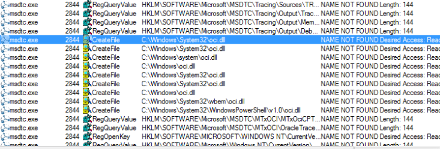

The MSDTC service is present on all Windows systems and is turned off 99% of the time. This is good from an attacker's perspective because we don't want to inadvertently break something which might draw attention to our presence. MSDTC is mostly required for database servers when they need to initiate transactions between multiple autonomous agents in a distributed system.
As we can see from the screenshot below, simply starting MSDTC yields 303 "NAME NOT FOUND" entries (nonsensical, I know, but true).

What we are specifically interested in here is "oci.dll". This dll is an example of a resource which is optional, it would only exist if the Windows machine was used to host an Oracle database. The MSDTC service checks if the dll exists, if it does it will load the dll otherwise it will simply continue with it's start-up routine.
Again, the persistence vector is pretty straight forward. We will want to
(1) create a dll that contains our malicious shellcode,
(2) rename it to "oci.dll",
(3) drop it in one of dll search paths obtained from Procmon and
(4) configure the MSDTC service to start at boot.
As in our first case study, we could generate a dll with metasploit but for stealth purposes it is much better to inject shellcode into a legitimate dll. Though the process of injecting code in a dll is marginally different a similar technique to the previous case study can be used. For brevity I will not cover the injection process here. This is a challenge I leave for the diligent reader to investigate.
Since I did not have a legitimate version of "oci.dll" I chose a Microsoft dll as a base to inject my shellcode. Below we can see that the details tab of the properties window still shows the original file details.
After the dll has been dropped on the target machine (in C:\Windows\System32\) persistence cab be achieved by using sc to configure MSDTC to start on boot
C:\Windows\system32> sc config msdtc start= auto
[SC] ChangeServiceConfig SUCCESS